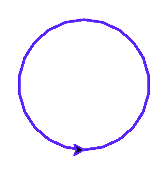
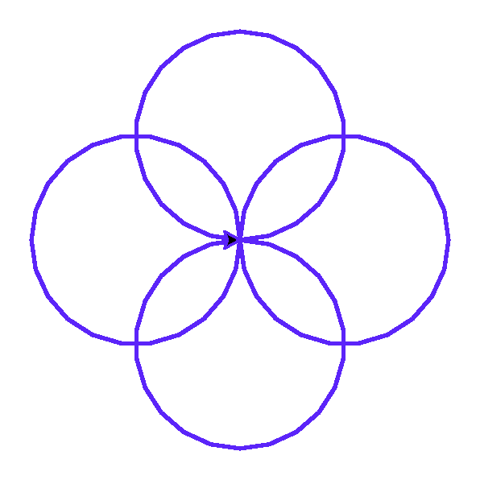
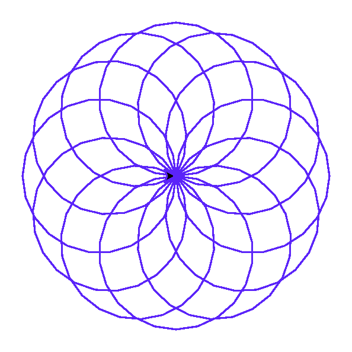
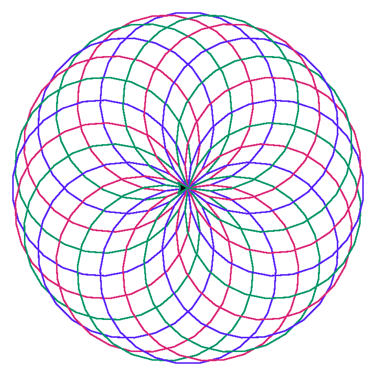

Глава 10 · Немного автоматизации!
Мини-проект — автоматически рисуем мандалу
Та же мандала, что и в главе 6, — теперь по стадиям, короче и понятнее благодаря range() с тремя аргументами.
В главе 6 мандала рисовалась циклом while с ручным
увеличением угла. Теперь распишем её по стадиям — от одного лепестка до полного узора —
и посмотрим на реальный результат каждой стадии.
Стадия 1 — один мотив
circle(60) без параметра extent рисует полную окружность и
возвращает черепашку точно в исходную точку и с исходным направлением:
mandala_stadiya_1.py
import turtle
screen = turtle.Screen()
screen.setup(width=300, height=300)
artist = turtle.Turtle()
artist.speed(0)
artist.pencolor("#5B24F9")
artist.pensize(2)
artist.circle(60)
screen.exitonclick()Результат выполнения

Стадия 2 — четыре мотива
mandala_stadiya_2.py
for _ in range(4):
artist.circle(60)
artist.left(90)mandala_stadiya_2.py
import turtle
screen = turtle.Screen()
screen.setup(width=300, height=300)
artist = turtle.Turtle()
artist.speed(0)
artist.pencolor("#5B24F9")
artist.pensize(2)
for _ in range(4):
artist.circle(60)
artist.left(90)
screen.exitonclick()Результат выполнения

Стадия 3 — двенадцать мотивов
mandala_stadiya_3.py
for _ in range(12):
artist.circle(60)
artist.left(30)mandala_stadiya_3.py
import turtle
screen = turtle.Screen()
screen.setup(width=300, height=300)
artist = turtle.Turtle()
artist.speed(0)
artist.pencolor("#5B24F9")
artist.pensize(1)
for _ in range(12):
artist.circle(60)
artist.left(30)
screen.exitonclick()Результат выполнения

Стадия 4 — полная мандала
mandala_polnaya.py
cvieta = ['#5B24F9', '#DB2777', '#059669']
for i in range(24):
artist.pencolor(cvieta[i % 3])
artist.circle(80)
artist.left(15)mandala_polnaya.py
import turtle
screen = turtle.Screen()
screen.setup(width=340, height=340)
artist = turtle.Turtle()
artist.speed(0)
artist.pensize(1)
cvieta = ["#5B24F9", "#DB2777", "#059669"]
for i in range(24):
artist.pencolor(cvieta[i % 3])
artist.circle(80)
artist.left(15)
screen.exitonclick()Результат выполнения

range() с тремя аргументами — то же, что и ручной while
for ugol in range(0, 360, shag_ugla): генерирует именно те же числа, что мы получали вручную в главе 6: while ugol < 360: ... ugol += shag_ugla. Цикл for просто делает это короче и без риска забыть увеличить счётчик.cvieta[i % 3] — остаток от деления как «зацикленный» индекс
i % 3 даёт 0, 1, 2, 0, 1, 2, … — какое бы большое ни было i, результат остатка всегда укладывается в диапазон индексов списка из 3 цветов. Этот приём — циклический перебор конечного набора значений — встречается очень часто.★★ Самостоятельная задача
Своя мандала
Поменяйте количество мотивов (24 → 36), радиус (80 → 50) и список цветов — соберите собственный узор.
Практика: мандала через for + range(), по стадиям
Модуль turtle открывает нативное окно Python — выполните локально в VS Code, PyCharm или Jupyter
Практика выполняется локально